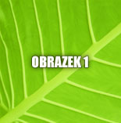
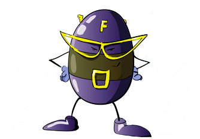

<p>
	
	<script>
	/*Przy wolnych ³¹czach lub du¿ych grafikach spowoduje to brak p³ynnoœci.
Aby temu zapobiec musimy wszystkie grafiki bior¹ce udzia³ w efekcie rollover 
za³adowaæ do cache przegl¹darki (czyli je wczeœniej pobraæ). 
Wówczas, w chwili wskazania obrazka, skrypt szybko podmieni jeden obrazek na drugi.

Aby za³adowaæ grafiki do cache musimy skorzystaæ z obiektu typu Image, 
któremu ustawimy odpowiedni¹ w³aœciwoœæ src. Podstawowa deklaracja tego
 typu obiektu ma postaæ:*/
	
	if (document.images) {
	var Image_off = new Image();//moge podac param. width i height
	Image_off.src = 'obrazek1.jpg';
	var Image_on = new Image();
	Image_on.src = 'obrazek2.jpg';
	var obr = document.getElementById('obrazek');
	obr.onmouseover = function() {this.src = Image_on.src}
	obr.onmouseout = function() {this.src = Image_off.src}
	}
	</script>
</p>

<p>
	
	<script>
	//.images - return A collection of all the IMG elements in a document. 
	//The behavior is limited to IMG elements for backwards compatibility.
	if (document.images) {
		var Image_Kill = new Image();
		Image_Kill.src = 'karto_2.jpg';
		var obr = document.getElementById('obrazekKarto');
		obr.onclick = function() {
			this.src = Image_Kill.src
			document.getElementById('zastrzel_tekst').innerHTML = 'I Ty przeciwko Fantomasowi?'
		}
	}
	</script>
	</p>
	<p id="zastrzel_tekst">
	Zastrzel kartofla!
	</p>
	
	
<script>
//Przypuœæmy, ¿e na naszej stronie mamy wiêcej grafik z efektem rollover
// (np. zmieniaj¹ce siê menu). Deklarowanie dla ka¿dej grafiki obu stanów w podany
// powy¿ej sposób mija siê z celem. O wiele lepszym rozwi¹zaniem jest zastosowanie
// tablicy do przechowywania nazw obrazków, a nastêpnie za pomoc¹ pêtli
// dynamiczne tworzenie obiektów Image:


var nazwy = new Array('obrazek.jpg', 'kartofelek.jpg', 'piesek.jpg', 'kotek.jpg', czekolada.jpg')
for (x=0; x<nazwy.length; x++) {
    var obr[x] = new Image();
    obr[x].src = nazwy[x];
}
//Jescze lepszym rozwiazaniem ulatwiajacym odwolywanie sie 
//do naszych obiektów, bedzie stworzenie tablicy zagniezdzonej:


var nazwy = new Array('obrazek', 'piesek', 'kotek', czekolada')
for (x=0; x<nazwy.length; x++) {
    var obr[x] = new Array();
    obr[x]['on'] = new Image();
    obr[x]['on'].src = nazwy[x]+'_on.jpg';
    obr[x]['off'] = new Image();
    obr[x]['off'].src = nazwy[x]+'_off.jpg'
}
 
document.getElementById('obrazek').onmouseover = function() {
    this.src = obr[1]['on'];
}
document.getElementById('obrazek').onmouseout = function() {
    this.src = obr[1]['off'];
}
</script>	
	
	
	